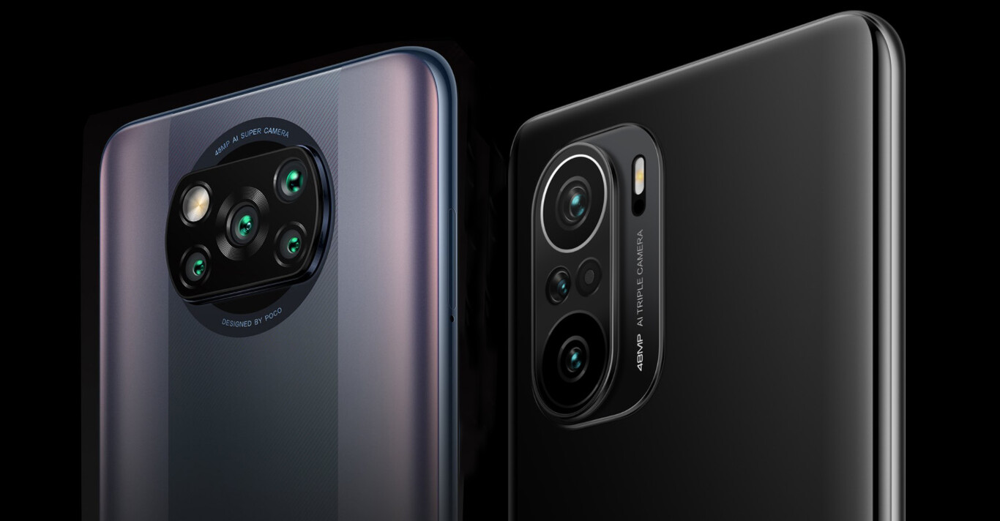

El nuevo POCO F3 llega al mercado para erigirse otro semestre más como el terminal a tener en cuenta si queremos la mejor relación calidad/precio.
Incluso suficiente para competir con modelos con el doble de precio que él.
¿Será de nuevo así con este POCO F3?
Cosas buenas del poco f3
las cosas buenas que tiene este equipo y por el cual consideramos que es un buen celular calidad precio
(considerando si tu puedes buscar este dispositivo de segunda mano), seria una muy buena compra
el motivo por el cual decimos esto es por el buen rendimiento en los video juegos, asi tambien
con las camaras que son de muy buena calidad, siempre y cuando las condiciones sean las adecuadas.
Una de las cosas que mas nos agrado fue su acabado de cristal en la parte tracera, tambien cabe
recalcar que este equipo tiene una muy buena pantalla de muy buena resolucion y laidad buena,
este equipo tambien fue metido a un test de caidas comunes o casuales que le pueden pasar al dispositivo
asi tambien pudimos revisar su puede aguantar las caidas y ver que tanto daño puede tener,
y nos complace decirles que en nuestras pruebas el celularse co porto muy bien,
mucho ojo al dispositivo que le hicimos las pruebas su daño fua casi nulo,esto quiere decir
que si tu llegas a tener este dispositivo puede que no tengas la misma suerte

Cosas malas del poco f3
algunas de las cosas malas de este equipo, puede ser el calentamiento que puede tener al estar usandolo
en el sol directo, asi que esto puede poner a tu dispositivo un poco lento, pero de hay en fuera esta muybien
el dispositivo.
tambien otra cosa que notamos es que puede ser dificil conseguir algun tipo de funda o mica para el dispositivo,
la unica forma donde conseguimos funda fue en linea.
eBay
Regresar a pagina inicial
Fuente confiable
video informativo